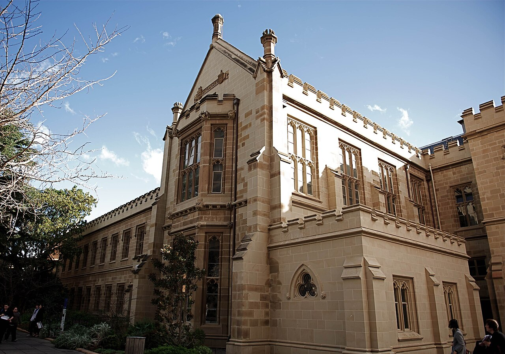
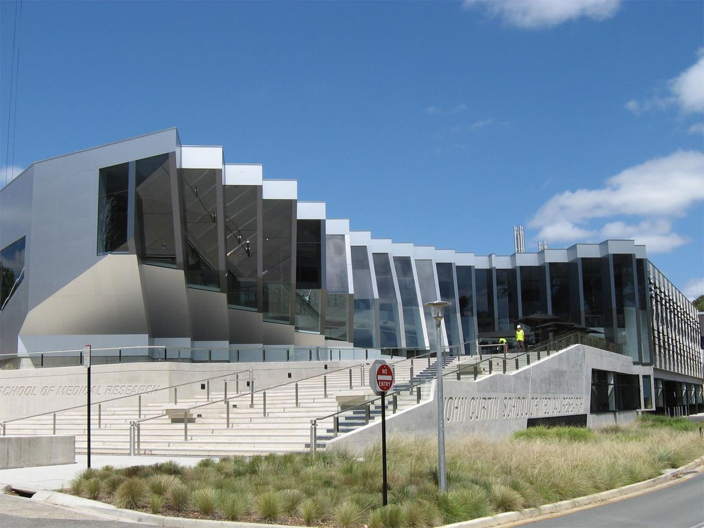
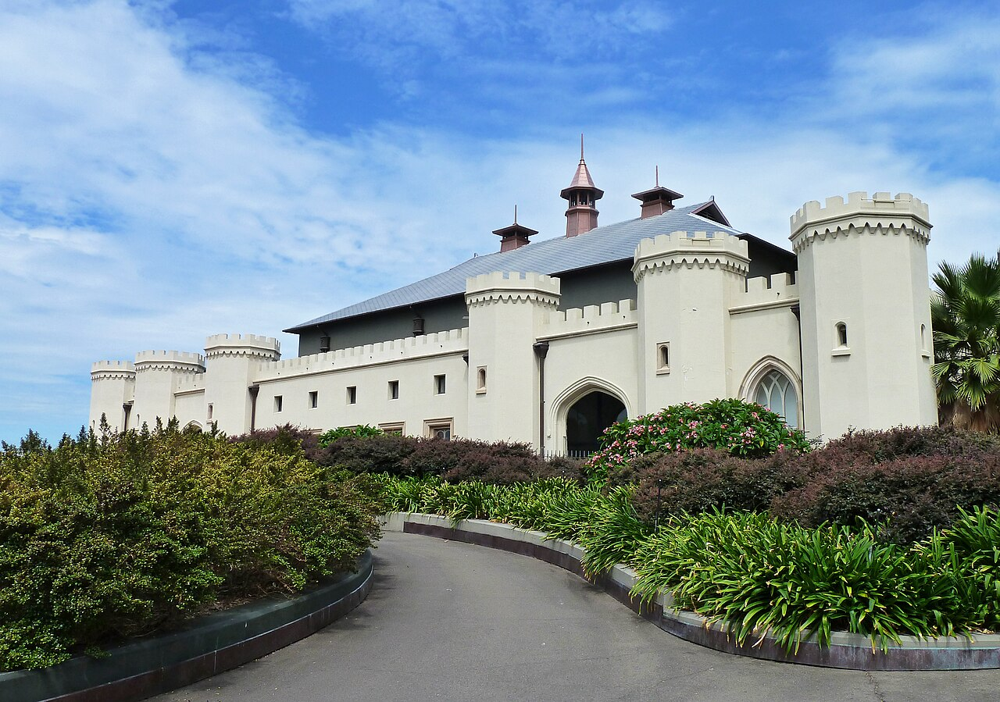

Australia is one of the most popular destinations for international students. It offers globally recognised universities, modern campuses, high-quality education, and a welcoming multicultural environment.
Students choose Australia because of its strong academic reputation, excellent lifestyle, scholarship opportunities, and post-study work options. Australian qualifications are recognised by employers and institutions around the world.
Australia offers some of the world's best student cities with excellent
universities, modern infrastructure, and strong career opportunities.
Melbourne is often ranked among the world's best student cities. It offers excellent universities, cultural diversity, and a vibrant lifestyle.
Sydney is Australia's largest city and offers strong career opportunities, beautiful beaches, and world-class universities.
Brisbane provides a warm climate, affordable living costs, and growing opportunities in technology and business sectors.
Perth is known for its relaxed lifestyle, beautiful environment, and strong opportunities in mining, engineering, and technology.
Public and private universities across Australia.
Students from all over the world study in Australia.
Government and university-funded scholarships.

One of Australia's highest ranked universities.
Popular for Business, Engineering, Medicine and IT.
Founded in 1853, the University of Melbourne is one of Australia's
highest-ranked universities. It is known for excellence in research,
medicine, engineering, business, law, and computer science.
Location: Melbourne, Victoria
Popular Courses:
• Computer Science
• Business
• Engineering
• Medicine
• Law
QS Ranking: Top 20 globally
International Students: 20,000+
IELTS Requirement: Usually 6.5 overall with no band below 6.0
Estimated Tuition Fees: AUD 35,000 – AUD 55,000 per year
Why Choose This University?
• Australia's highest-ranked university
• Strong research reputation
• Excellent graduate employment outcomes
• Modern campus facilities

Australian National University is one of Australia's leading research
universities. It is known for politics, international relations,
science, engineering, and public policy programs.
Location: Canberra, Australian Capital Territory
Popular Courses:
• Political Science
• International Relations
• Engineering
• Data Science
• Public Policy
QS Ranking: Top 35 globally
International Students: 10,000+
IELTS Requirement: Usually 6.5 overall with no band below 6.0
Estimated Tuition Fees: AUD 33,000 – AUD 52,000 per year
Why Choose This University?
• Australia's leading research university
• Strong government and policy connections
• World-class academics
• Excellent international reputation

The University of Sydney is Australia's first university and one of the
most prestigious institutions in the country. It offers high-quality
education and modern research facilities.
Location: Sydney, New South Wales
Popular Courses:
• Medicine
• Business
• Computer Science
• Law
• Engineering
QS Ranking: Top 25 globally
International Students: 22,000+
IELTS Requirement: Usually 6.5 overall with no band below 6.0
Estimated Tuition Fees: AUD 36,000 – AUD 58,000 per year
Why Choose This University?
• Australia's oldest university
• Strong global reputation
• Located in Sydney's business hub
• Excellent research opportunities
Monash University is one of Australia's largest and most respected
universities. It has strong global partnerships and is recognised for
innovation, research, and industry-focused education.
Location: Melbourne, Victoria
Popular Courses:
• Information Technology
• Pharmacy
• Engineering
• Business
• Data Science
QS Ranking: Top 40 globally
International Students: 25,000+
IELTS Requirement: Usually 6.5 overall with no band below 6.0
Estimated Tuition Fees: AUD 32,000 – AUD 50,000 per year
Why Choose This University?
• Large international student community
• Industry-focused education
• Multiple global campuses
• Strong graduate employability
University requirements, tuition fees and scholarships may change every year.
For latest updates, visit the official Study Australia website.
Visit Official Study Australia Website